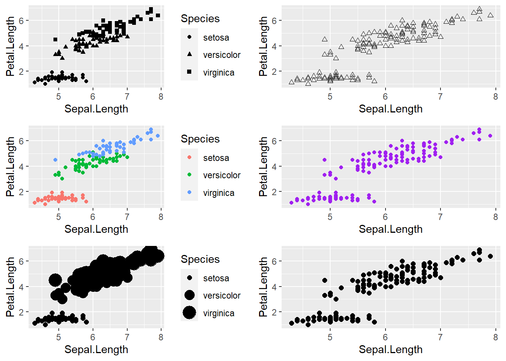
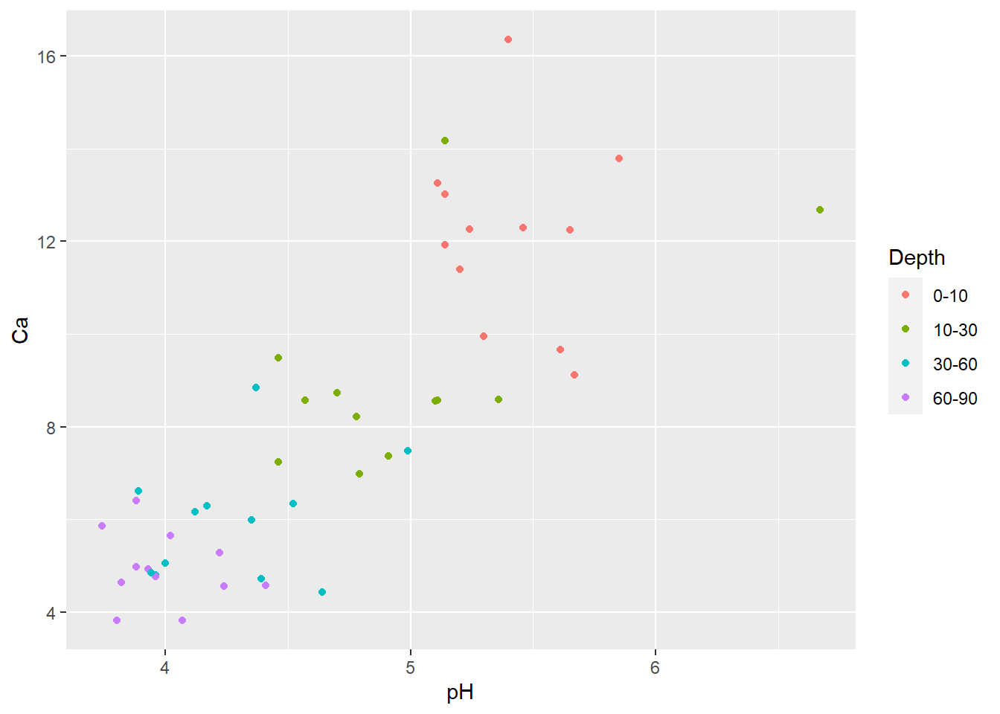
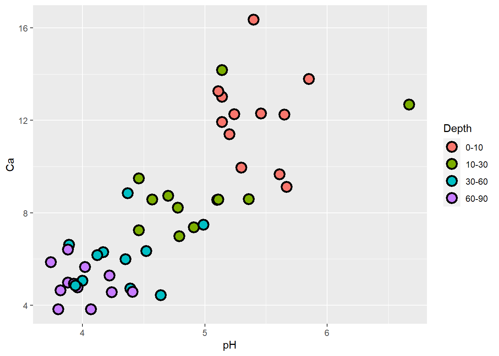
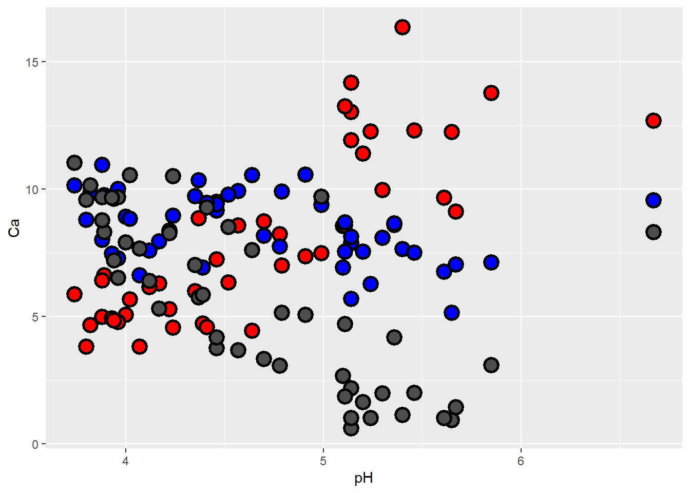

Submodule 1.3
Plotting in R (ggplot)
Fall 2023
Visualization often plays a major role in the research process, from quality assurance, to data exploration, to the presentation of results.
The data visualization package ggplot2 makes it very easy and straightforward to create a lot of different types of plots, from simple to complex. In this module, we’ll introduce ggplot syntax and briefly survey some of the package’s plotting capabilities.
A good ggplot cheat sheet can be found here: ggplot cheat sheet
Load script for submodule #1.3: Plotting
Click here to download the script, and save the script to your working directory (R Project folder).
Load the script into your RStudio Project. To do this, open your RStudio Project and click on the folder icon in the toolbar at the top and load your script.
Let’s get started with plotting in R!
ggplot basics
A typical workflow begins with initiating plotting with the
ggplot() function and specifying the data
frame you want to use to create your visualizations. We then often
define the “x” argument (defining coordinates on an x axis) and (if
applicable) a “y” argument (defining coordinates on a y axis). In ggplot
these are known as aesthetic mappings! That is because it is a way of
conveying information in the dataset graphically! Other ways of
conveying information graphically include point size, color, and symbol-
all of which are also referred to as aesthetic mappings (syntax:
mapping=aes()).
You can then add geometric objects (like points) to your plot, often
using functions beginning with geom_, to
represent your data in the form of a boxplot
(geom_boxplot()), scatterplot
(geom_point()), or a variety of other
types of plots. The aes() function can be
called within these “geoms” to specify which variables to display and
how these data should be displayed (which data should be used to
represent the bar height, or the x coordinate, or the point size, etc.).
aes() can also be used within the initial
call to ggplot().
Here is an example of a simple scatterplot in ggplot:
# scatterplots ----------------------------
ggplot(trees, aes(x=Girth,y=Volume)) +
geom_point()We’ll start with the ‘trees’ dataset, which is built into R. It describes the girth, height, and volume of 31 felled black cherry trees.
# ASIDE: explore the built-in 'trees' dataset
# ?trees # description of built in dataset (uncomment to run)
dim(trees) # Show the dimension of the trees dataframe ## [1] 31 3str(trees) # Show the structure of the trees dataframe## 'data.frame': 31 obs. of 3 variables:
## $ Girth : num 8.3 8.6 8.8 10.5 10.7 10.8 11 11 11.1 11.2 ...
## $ Height: num 70 65 63 72 81 83 66 75 80 75 ...
## $ Volume: num 10.3 10.3 10.2 16.4 18.8 19.7 15.6 18.2 22.6 19.9 ...head(trees) # Show the first few observations of the trees dataframe## Girth Height Volume
## 1 8.3 70 10.3
## 2 8.6 65 10.3
## 3 8.8 63 10.2
## 4 10.5 72 16.4
## 5 10.7 81 18.8
## 6 10.8 83 19.7summary(trees) # Summary stats for each column## Girth Height Volume
## Min. : 8.30 Min. :63 Min. :10.20
## 1st Qu.:11.05 1st Qu.:72 1st Qu.:19.40
## Median :12.90 Median :76 Median :24.20
## Mean :13.25 Mean :76 Mean :30.17
## 3rd Qu.:15.25 3rd Qu.:80 3rd Qu.:37.30
## Max. :20.60 Max. :87 Max. :77.00And some more fancy and informative scatterplots
# try representing tree height using the color aesthetic
ggplot(trees, aes(x=Girth,y=Volume)) +
geom_point(aes(col=Height))
# try representing tree height using the size aesthetic
ggplot(trees, aes(x=Girth,y=Volume)) +
geom_point(aes(size=Height)) # try adding a regression line
ggplot(trees, aes(x=Girth,y=Volume)) +
geom_point() +
geom_smooth(method="lm")
Change Plot Type
Because we’re exploring different ways of plotting, it is useful to include multiple plots in the same image.
We can do this using the plot_grid() function in the
cowplot package (commonly used extensions to ggplot). Here we explore
different ways of graphically representing the relationship between tree
girth and volume.
# Explore different "geoms" or plot types
plot1 <- ggplot(trees,aes(Girth,Volume)) + # plot the relationship as a line
geom_line()
plot2 <- ggplot(trees,aes(Girth,Volume)) + # plot a smoothed "spline" fit of the relationship
geom_smooth()
plot3 <- ggplot(trees,aes(Girth,Volume)) + # plot scatterplot
geom_point()
plot4 <- ggplot(trees,aes(Girth,Volume)) + # plot scatterplot with smoothed regression line
geom_point() +
geom_smooth()
plot_grid(plot1,plot2,plot3,plot4,labels="auto")Change symbols, colors and point sizes
Point shape is specified using the shape= option.
Color is specified using the color= option.
Size is specified using the size= option.
If you want convey information in your data via the color, symbol, or point size, you include it as an aesthetic mapping- and link it to one of the columns in your data.
If you just want to color all the points the same way, or use the same symbol for everything, specify this outside of the aesthetic mapping.
To illustrate this, let’s use the built in iris dataset,
which gives the sepal length/width and petal length/width (in cm), for
50 flowers from each of 3 iris species.
# Explore different aesthetic mappings
plot1 <- ggplot(iris,aes(Sepal.Length,Petal.Length)) + # shape represents species
geom_point(aes(shape=Species))
plot2 <- ggplot(iris,aes(Sepal.Length,Petal.Length)) + # shape is same for everything!
geom_point(shape=2)
plot3 <- ggplot(iris,aes(Sepal.Length,Petal.Length)) + # color represents species
geom_point(aes(color=Species))
plot4 <- ggplot(iris,aes(Sepal.Length,Petal.Length)) + # color is same across the board
geom_point(col="purple")
plot5 <- ggplot(iris,aes(Sepal.Length,Petal.Length)) + # size represents species
geom_point(aes(size=Species))
plot6 <- ggplot(iris,aes(Sepal.Length,Petal.Length)) + # size is same across the board
geom_point(size=2)
plot_grid(plot1,plot2,plot3,plot4,plot5,plot6,ncol=2)
Here is a graphic illustrating the main plot symbols you can
reference using shape=:
 Colors are a bit more intuitive, but here’s
a link
to a chart of R colors)
Colors are a bit more intuitive, but here’s
a link
to a chart of R colors)
Themes
You can see that the default plot includes a gray background with white gridlines. This makes all of the elements on this plot easy to see, but as you start adjusting colors and identifying your personal preferences, you’ll probably want to customize this – ggplot has a ton of options for doing so. Here’s a few examples of ggplot themes:
# explore themes
plot1 <- ggplot(iris,aes(Sepal.Length,Petal.Length)) + # color represents species
geom_point(aes(color=Species)) +
theme_bw()
plot2 <- ggplot(iris,aes(Sepal.Length,Petal.Length)) + # color represents species
geom_point(aes(color=Species)) +
theme_classic()
plot3 <- ggplot(iris,aes(Sepal.Length,Petal.Length)) + # color represents species
geom_point(aes(color=Species)) +
theme_minimal()
plot4 <- ggplot(iris,aes(Sepal.Length,Petal.Length)) + # color represents species
geom_point(aes(color=Species)) +
theme_minimal_grid(font_size = 11)
plot_grid(plot1,plot2,plot3,plot4,labels = "AUTO")# note: many other themes are available in ggplot, cowplot and other related packagesChanging title and axis labels
We can also add titles, axis labels, and other options to make the plots look prettier.
# add additional plot elements: title, axis limis, axis labels
plot1 <- ggplot(iris,aes(Sepal.Length,Petal.Length)) + # color represents species
geom_point(aes(color=Species)) +
labs(x="Sepal Length (cm)")
plot2 <- ggplot(iris,aes(Sepal.Length,Petal.Length)) + # color represents species
geom_point(aes(color=Species)) +
labs(x="Sepal Length (cm)",y="Petal Length (cm)",color="Iris sp.")
plot3 <- ggplot(iris,aes(Sepal.Length,Petal.Length)) + # color represents species
geom_point(aes(color=Species)) +
labs(x="Sepal Length (cm)",y="Petal Length (cm)",color="Iris sp.",
title="Fisher's Iris Data",subtitle = "practice with ggplot")
plot4 <- ggplot(iris,aes(Sepal.Length,Petal.Length)) + # color represents species
geom_point(aes(color=Species)) +
coord_cartesian(xlim=c(0,10),ylim=c(0,10)) +
labs(x="Sepal Length (cm)",y="Petal Length (cm)",color="Iris sp.",
title="Fisher's Iris Data",subtitle = "practice with ggplot")
plot_grid(plot1,plot2,plot3,plot4,labels = "AUTO")Bar Plots and box-whisker plots
# bar plots, box-whisker plots, violin plots -----------------------
plot1 <- ggplot(iris,aes(x=Species,y=Sepal.Length)) + # more informative box-whisker plot
geom_boxplot()
plot2 <- ggplot(iris,aes(x=Species,y=Sepal.Length)) + # more informative box-whisker plot +
geom_violin()
# bar plot
bar.heights <- iris %>%
group_by(Species) %>%
summarize(meanSL = mean(Sepal.Length))
plot3 <- ggplot(bar.heights, aes(Species,meanSL)) +
geom_col()
plot4 <- ggplot(bar.heights, aes(Species,meanSL)) +
geom_col(aes(fill=Species)) +
theme_classic() +
scale_fill_manual(values=c("gray","red","brown"))
plot_grid(plot1,plot2,plot3,plot4,labels = "AUTO")But what if we want to have some error bars?
# Bar plot with error bars
bar.heights <- iris %>%
group_by(Species) %>%
summarize(meanSL = mean(Sepal.Length),
n = n(),
sdSL = sd(Sepal.Length),
se = sdSL/sqrt(n))
ggplot(bar.heights,aes(x=Species,y=meanSL)) +
geom_col(fill=gray(0.7),color="black") +
geom_errorbar(aes(ymin=meanSL-2*sdSL,ymax=meanSL+2*sdSL),width=.2) +
labs(y="Sepal Length")
And for a slightly more complex example, let’s consider the built in
ToothGrowth data set, which looks at tooth growth in guinea
pigs under three different vitamin C doses and two different delivery
methods (orange juice or ascorbic acid).
# ?ToothGrowth
head(ToothGrowth)## len supp dose
## 1 4.2 VC 0.5
## 2 11.5 VC 0.5
## 3 7.3 VC 0.5
## 4 5.8 VC 0.5
## 5 6.4 VC 0.5
## 6 10.0 VC 0.5# toothgrowth plot
ToothGrowth$dose <- as.factor(ToothGrowth$dose)
sumTC <- ToothGrowth %>%
group_by(supp,dose) %>%
summarize(mean = mean(len),
sd = sd(len))
p<- ggplot(sumTC, aes(x=dose, y=mean, fill=supp)) +
geom_col(color="black",
position=position_dodge()) +
geom_errorbar(aes(ymin=mean-sd, ymax=mean+sd), width=.2,
position=position_dodge(0.9)) +
labs(title="Tooth growth", x="Dose (mg)", y = "Length") +
theme_classic() +
scale_fill_manual(values=c('#999999','#E69F00'))
print(p)Practice demo (with some new stuff)
For additional practice, let’s use the Soils dataset from the ‘carData’ package, which contains soil attributes from a gilgai landscape (mounds and depressions caused by shrinking and swelling of clays during dry and wet seasons) in Australia.
First we will need to load a few more packages. Make sure to install any packages in this list you don’t already have!
# More complex demo -----------------------------
library(ggthemes)
library(carData)
library(DAAG)
library(RColorBrewer)Now load the dataset.
# Load the example data
soil <- carData::Soils # load example data
#See what variables it contains...
head(soil) # plot out the first few lines...## Group Contour Depth Gp Block pH N Dens P Ca Mg K Na Conduc
## 1 1 Top 0-10 T0 1 5.40 0.188 0.92 215 16.35 7.65 0.72 1.14 1.09
## 2 1 Top 0-10 T0 2 5.65 0.165 1.04 208 12.25 5.15 0.71 0.94 1.35
## 3 1 Top 0-10 T0 3 5.14 0.260 0.95 300 13.02 5.68 0.68 0.60 1.41
## 4 1 Top 0-10 T0 4 5.14 0.169 1.10 248 11.92 7.88 1.09 1.01 1.64
## 5 2 Top 10-30 T1 1 5.14 0.164 1.12 174 14.17 8.12 0.70 2.17 1.85
## 6 2 Top 10-30 T1 2 5.10 0.094 1.22 129 8.55 6.92 0.81 2.67 3.18Staring simply, let’s say we’re interested in how pH, a continuous variable, varies with contour position, a categorical factor:
# basic boxplot and violin plot
plot1 <- ggplot(soil) +
geom_boxplot(aes(x=Contour, y=pH))
plot2 <- ggplot(soil) +
geom_violin(aes(x=Contour, y=pH))
plot_grid(plot1,plot2,labels = "AUTO")Next let’s try a simple scatterplot of two continuous variables, Calcium content and pH:
# basic scatterplot
ggplot(soil) +
geom_point(aes(x=pH, y=Ca))
Now let’s say you wanted to examine if/how the relationship between pH and Ca varies with depth. You could go back to your scatterplot and use color to identify points from the different sampling depths.
# Color the points by depth
ggplot(soil) +
geom_point(aes(x=pH, y=Ca, color=Depth))
Try playing around with applying a few graphical attributes to all
the points (specified outside the aes() argument). Try
specifying shape=21, color="black" ,
size=3 and stroke=1:
# make additional alterations (outside the "aes" function)
ggplot(soil) +
geom_point(aes(x=pH, y=Ca, fill=Depth), shape=21, color="black", size=4, stroke=1.5)
Now for something new: let’s plot relationships between pH and several soil nutrients on the same graph. Notice that the y axis label defaults to the first set of points (Ca), and we’d need to modify it. Also there is no legend! You’d have to change things like axis labels and legend titles ‘manually’ to complete this figure.
# Plot several relationships on same plot
ggplot(soil, aes(x=pH)) +
geom_point(aes(y=Ca), shape=21, fill="red", color="black", size=4, stroke=1.5) +
geom_point(aes(y=Mg), shape=21, fill="blue", color="black", size=4, stroke=1.5) +
geom_point(aes(y=Na), shape=21, fill="gray30", color="black", size=4, stroke=1.5)
There’s a better way to do it. But first we need to ‘reshape’ our soils data with the tidyverse function `pivot_longer().
ASIDE: tidy data and reshaping functions
All of the tidyverse set of packages are designed to work with Tidy formatted data.
This means:
- Each variable must have its own column.
- Each observation must have its own row.
- Each value must have its own cell.
This is what it looks like:

The tidyr package has several functions to help you get your data into this format.
Use “pivot_longer()” to get all of the values and variables from multiple columns into a single column.

Use “pivot_wider()” to distribute two variables in a single column into separate columns, with their data values(‘value’)

For a nice intro to ‘pivot_wider’ and ‘pivot_longer’, see this link
Back to the example…
Let’s reshape the soil dataset into the long format- which in this case treats each separate nutrient measurement as a different observation (row).
# Use 'tidyverse' to reshape the data
soil.nut <- pivot_longer(soil, cols=c("Ca","Mg","Na"), names_to="nutrient",values_to = "value" )
soil.nut## # A tibble: 144 × 13
## Group Contour Depth Gp Block pH N Dens P K Conduc nutrient
## <fct> <fct> <fct> <fct> <fct> <dbl> <dbl> <dbl> <int> <dbl> <dbl> <chr>
## 1 1 Top 0-10 T0 1 5.4 0.188 0.92 215 0.72 1.09 Ca
## 2 1 Top 0-10 T0 1 5.4 0.188 0.92 215 0.72 1.09 Mg
## 3 1 Top 0-10 T0 1 5.4 0.188 0.92 215 0.72 1.09 Na
## 4 1 Top 0-10 T0 2 5.65 0.165 1.04 208 0.71 1.35 Ca
## 5 1 Top 0-10 T0 2 5.65 0.165 1.04 208 0.71 1.35 Mg
## 6 1 Top 0-10 T0 2 5.65 0.165 1.04 208 0.71 1.35 Na
## 7 1 Top 0-10 T0 3 5.14 0.26 0.95 300 0.68 1.41 Ca
## 8 1 Top 0-10 T0 3 5.14 0.26 0.95 300 0.68 1.41 Mg
## 9 1 Top 0-10 T0 3 5.14 0.26 0.95 300 0.68 1.41 Na
## 10 1 Top 0-10 T0 4 5.14 0.169 1.1 248 1.09 1.64 Ca
## # … with 134 more rows, and 1 more variable: value <dbl>This lets us plot our different nutrients as factor levels without typing each one with its specifications on its own line, and automatically generates a legend that identifies the series (and also gives the default ggplot colors).
ggplot(soil.nut) +
geom_point(aes(x=pH, y=value, fill=nutrient), shape=21, color="black", size=4, stroke=1.5)
What if instead of Na, we had K as our third nutrient of interest?
# or if we wanted to plot different nutrients...
soil.nut2 <- pivot_longer(soil, cols=c("Ca","Mg","K"), names_to="nutrient",values_to = "value" )
ggplot(soil.nut2) +
geom_point(aes(x=pH, y=value, fill=nutrient), shape=21, color="black", size=4, stroke=1.5)
The problem here is that K occurs at natural concentrations that differ from the other nutrients by an order of magnitude, so it’s difficult to examine them all on the same scale. One approach we can take is to plot them separately. While we’re at it, let’s also make sure that we specify the response units on the y-axis.
Facets and scales, and themes
The next plot introduces:
facets, which allow you to display data on separate panels using some grouping variable
scales, which allow you to adjust how to represent the data with axes and colors
We also play around with some more ggplot themes.
# plot with facets, scales, and themes!
ggplot(soil.nut2) +
geom_point(aes(x=pH, y=value, fill=nutrient),
shape=21, color="black", size=4, stroke=1.5) +
facet_wrap(~nutrient, scales="free_y") +
labs(y="mg / 100 g soil") +
theme_bw() +
theme(legend.position="none",
axis.text = element_text(size=20),
axis.title = element_text(size=25),
strip.text = element_text(size=25, face="bold"))
In this plot, we’ve kept the different colors for each nutrient, but
suppressed the legend that is auto-generated by ggplot, because this
information is now redundant with the headers of the three facets. In
the facet_wrap function, we used
scales to specify that the y-axis should
be bounded to fit the data within each facet. There are some cases where
you would probably want the axes to be the same – e.g. if you were
comparing raw values across groups, rather than the distributions or
trends of the data.
We also changed the theme. ggplot has 8 built-in themes to choose from. There are also lots of other themes built into extension packages such as ggthemes.
{kind=link}
You can also fine-tune pretty much any of the details (gridlines or
no? plot borders? line weight of the borders and gridlines? axis label
angles?) to your heart’s content using the arguments in the
theme() function.
ASIDE: Specifying colors
Sometimes sticking to the default colors in ggplot isn’t the best choice. You might have factors representing ordered ranks, like in an experiment with different levels of light exposure, and want to represent these levels on a monochromatic scale. Or you might want to make a map displaying regions of positive or negative change in forest cover, using a diverging color scale. Or you don’t even like the default ggplot colors, and have your own preferred color schemes. It’s also important to remember that red-green colorblindness is fairly common, so if you are presenting data that must be distinguished by colors in a single plotting area, you should probably avoid this combination or combine it with changes in value (light to dark) in order for your plot to be accessible.
Going back to our earlier example showing Ca content by pH at different depths, let’s say we want a color scheme where deeper depths are represented by darker values of the same color. We can do this by using another scale function.
One method is to use scale_fill_brewer,
and select an already composed color palette from RColorBrewer (a
package you’ll need to install). You can check out all of the options
available in RColorBrewer by entering
display.brewer.all(), which shows the
sequential palettes, then categorical palettes, than diverging
palettes.
# Playing with colors in ggplot!
display.brewer.all()
I’m going to pick the YlOrBr (Yellow-Orange-Brown) palette, because
those seem like good soil-y colors. Notice that because
fill is mapped to the values of the data,
inside this function is where I can change the title of the legend (and
the labels for the different values, if I wanted to do that).
# Choose a new color palette from the RColorBrewer package
ggplot(soil) +
geom_point(aes(x=pH, y=Ca, fill=Depth), shape=21, color="black", size=4, stroke=1.5) +
theme_classic() +
labs(y="Ca (mg/100g soil)") +
scale_fill_brewer(palette="YlOrBr", name="Depth (cm)")
Another method is to use
scale_fill_manual, with which you define
your own palette. To pick out your colors, you can use the names
of colors already recognized by R, or use hex codes for any color you
want.
# Choose your own palette!
ggplot(soil) +
geom_point(aes(x=pH, y=Ca, fill=Depth), shape=21, color="black", size=4, stroke=1.5) +
theme_bw() +
ylab("Ca (mg/100g soil)") +
scale_fill_manual(values=c("#FFF0BF","#FFC300","#BF9200","#604900"), name="Depth (cm)")
What if depth were a continuous variable, rather than a set of four
discrete categories? We could use
scale_fill_gradient, supply the hues we
want (one for monochromatic, two for diverging) and R would map the soil
depth values to color values along the gradient.
Trendlines
Next, we might want to add a trendline to each set of points. Try it
for the plot we made of different nutrient concentrations as a function
of pH. Arguments in the geom_smooth()
function allow us to change the confidence level, the smoothing method,
and other details:
# add trendlines
ggplot(soil.nut2) +
geom_point(aes(x=pH, y=value, fill=nutrient),
shape=21, color="black", size=4, stroke=1.5) +
geom_smooth(aes(x=pH, y=value), method="lm", color="black") +
facet_wrap(~nutrient, scales="free_y") +
ylab("mg / 100 g soil") +
theme_classic() +
theme(legend.position="none",
axis.text = element_text(size=14),
axis.title = element_text(size=16),
strip.text = element_text(size=16, face="bold"))
Density curves and error bars
Using geom_smooth to plot trendlines is
a useful way to get more information from your scatterplots. To get an
idea for how other kinds of statistical elements can be drawn onto
plots, we’ll look at examples using histograms and boxplots.
First, a simple histogram of 3 soil nutrients.
# Adding density/smooth curves to plots
## first produce some histograms
ggplot(soil.nut) +
geom_histogram(aes(x=value), color="black", fill="white", bins=15) +
facet_wrap(~nutrient, scales="free") +
xlab("mg / 100g soil") +
theme_classic() +
theme(axis.text = element_text(size=20),
axis.title = element_text(size=25),
strip.text = element_text(size=25, face="bold"))Here is how to add a density curve to the histogram with another
geom:
# Then add density curves
ggplot(soil.nut) +
geom_histogram(aes(x=value, y=..density..), color="black", fill="white", bins=15) +
geom_density(aes(x=value,color=nutrient), size=1.5) +
facet_wrap(~nutrient, scales="free") +
xlab("mg / 100g soil") +
theme_classic() +
theme(legend.position="none",
axis.text = element_text(size=20),
axis.title = element_text(size=25),
strip.text = element_text(size=25, face="bold"))
And here’s how we can compare our distributions to a normal
distribution, using a stat function:
# And now let's use a statistical function (dnorm) in ggplot to compare with a normal distribution:
ggplot(soil.nut) +
geom_histogram(aes(x=value, y=..density..), color="black", fill="white", bins=15) +
stat_function(fun = dnorm, color = "blue", size = 1.5,
args=list(mean=mean(soil.nut$value), sd=sd(soil.nut$value))) +
facet_wrap(~nutrient, scales="free") +
xlab("mg / 100g soil") +
theme_classic() +
theme(legend.position="none",
axis.text = element_text(size=20),
axis.title = element_text(size=25),
strip.text = element_text(size=25, face="bold"))
Let’s go back to our basic boxplot, the default plot for visualizing continuous data against categories.
First, you may have noticed that the whiskers do not have caps on
them, as they do in base R. This is a matter of personal preference, but
if capless whiskers look “off” to you, then you can work around it using
stat_boxplot.
stat_ functions are another group of
functions for creating layers based on statistical properties of the
data. Another example is stat_summary,
which we use in the example below to add means to the boxplot.
# add error bars and other stat summaries (e.g., mean) to boxplot
ggplot(soil, aes(x=Contour, y=pH)) +
stat_boxplot(geom="errorbar", width=0.2) +
stat_boxplot() +
stat_summary(fun=mean,geom="point",size=5, color="black")Interestingly, there is generally a way to add just about any graphical element using either “stat_” or “geom_” functions. It’s a good idea to play around with both!
Beyond ggplot
ggplot contains an incredibly rich and powerful set of tools for visualizing data. But ggplot and base R are not your only options! A variety of packages exist for visualization, including:
ggplot extensions
Several packages have been created that build off of ggplot’s syntax with additional functions. You can find a list of them here.
Technique-specific plotting libraries
Several analytical packages come with their own plotting functions that produce some very nice visualizations. There are dozens out there, but a few of them are visreg for regression plots, corrplot (and its ggplot counterpart, ggcorrplot) for graphical presentation of correlation matrices, and rpart.plot as a companion to the decision tree package rpart.
Interactive plots: leaflet and plotly
Increasingly, scientific journals are providing platforms for interactive graphics on their websites to accompany published articles. Interactive plots are also popular for personal, lab, and organizational websites, and they can provide another option for your own data exploration. Two of the most popular in R are plotly, which offers a huge variety of 2D and 3D plots, and leaflet, which is specifically for mapping.
Here’s a quick and simple example of leaflet in action using the “possumsites” dataframe that accompanies the “possum” dataset in the DAAG package. The dataset contains body measurements of several possums in Australia. Where did they catch these possums?
# use leaflet for interactive mapping! ------------
leaflet(possumsites) %>%
addTiles() %>% #Adds map tiles from OpenStreetMap
addMarkers(lng=c(possumsites$Longitude), lat=c(possumsites$Latitude),
popup=c(as.character(possumsites$altitude))) #Adds markers for the sitesChallenge exercises
- Using our scatterplot of calcium by pH, in which points were colored according to which depth they represent, visualize a separate trendline for each depth category. Have the color of the trendline match the color of each cloud of points. Remove the confidence band from the trendlines. The plot should look something like this:
- Create a boxplot that shows the values of Ca, Mg, and Na across all 3 contour positions, with no faceting (all on one plot). Add a diamond symbol indicating the mean value across all 3 contour positions for each nutrient. The plot should look something like this:
- Plot the density curves of Ca, Mg, and Na atop each other with fixed
y and x axes. Make them transparent in color (use
alpha=0.5) in order to see overlapping areas. The plot should look like this (usestheme_dark()):
# CHALLENGE EXERCISES -------------------------------------
# 1. Using our scatterplot of calcium by pH, in which points were colored according to which depth they represent,
# fit a separate trendline for each depth category. Have the color of the trendline match the color of each
# cloud of points. Remove the confidence band from the trendlines.
#
# 2. Create a boxplot that shows the values of Ca, Mg, and Na across all 3 contour positions, with no faceting (all on one plot).
# Add a diamond symbol indicating the mean value across all 3 contour positions for each nutrient.
#
# 3. Plot the density curves of Ca, Mg, and Na atop each other with fixed y and x axes. Make them transparent in color
# (use `alpha=0.5`) in order to see overlapping areas.